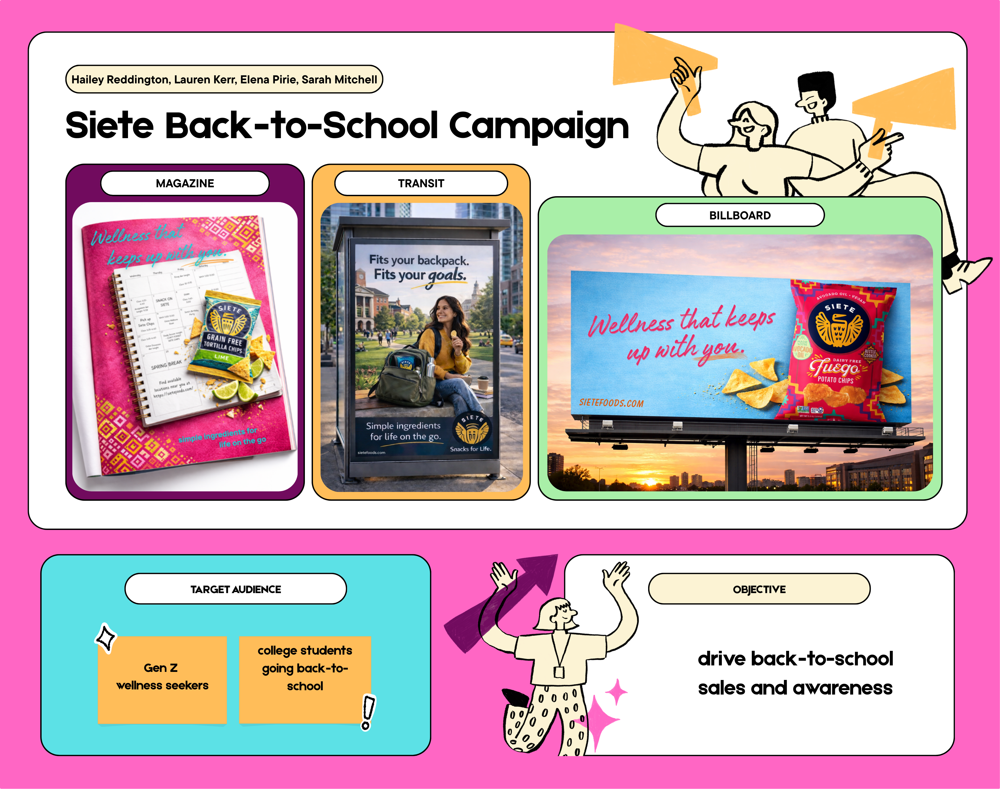

This advertising campaign was developed as a collaborative group project during my junior year at James Madison University. The campaign targeted Gen Z “wellness seekers,” a consumer segment that values convenient snacks made with recognizable ingredients and aligned with a health-conscious lifestyle. Our primary objective was to promote Siete Foods’ single-serving chip bags during the back-to-school season by positioning the product as a convenient, flavorful, and better-for-you snack option for busy college students.
To reach the target audience across multiple points in their daily routine, we created three out-of-home and print deliverables: a full-page magazine advertisement, a bus stop transit advertisement placed on a college campus, and a billboard positioned along a major route into a college town. Each execution was designed to maintain a cohesive visual identity and communicate the product’s portability, convenience, and relevance to students balancing classes, social activities, and wellness-focused habits.